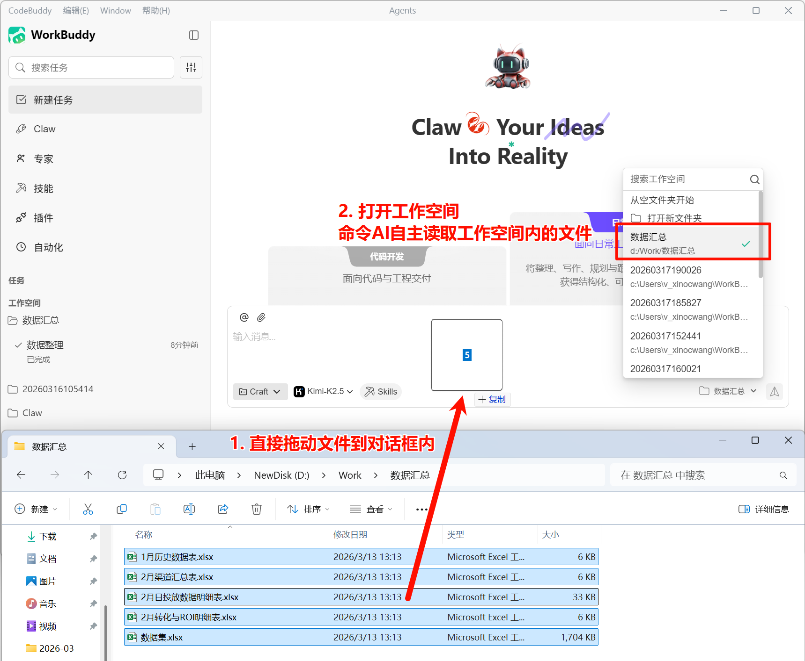
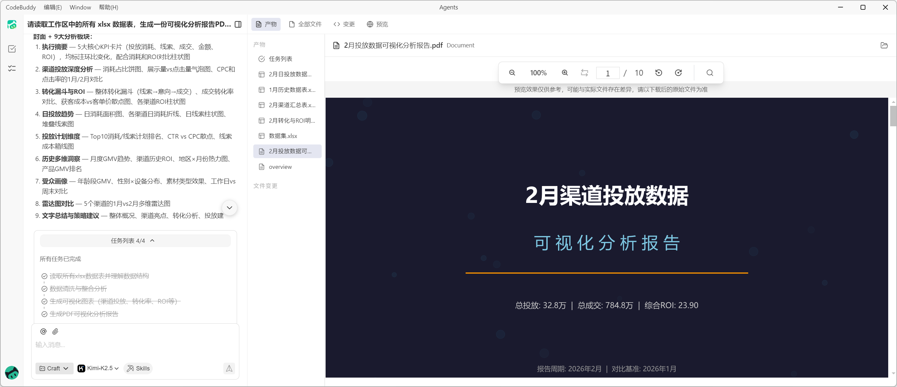
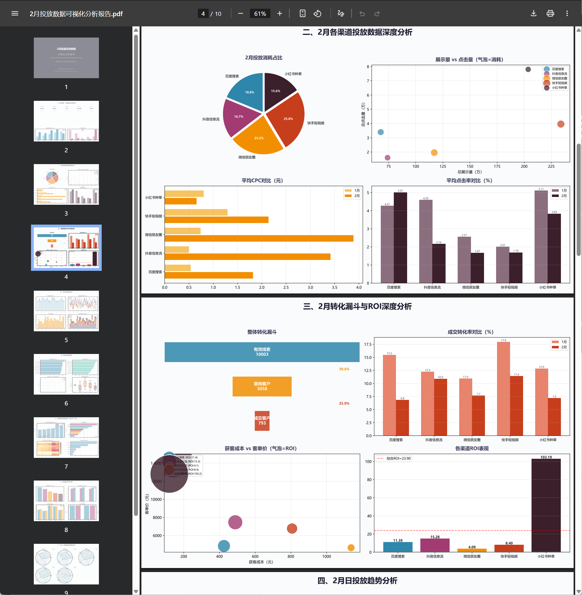

实践三：数据分析并可视化
一、文档说明
本文介绍如何使用 WorkBuddy 完成表格可视化、数据搜集与报告生成，适用于经营分析、项目汇报、市场调研与业务复盘等场景。
二、将 Excel 表格转为可视化图表
1）导入数据文件
当你已经拥有 Excel、CSV 等数据文件时，可直接将文件拖入对话，或明确告诉 WorkBuddy 文件所在路径。

2）描述分析需求
建议一次说明以下信息：
- 需要分析的指标
- 想看的图表类型
- 统计维度或时间范围
- 是否需要输出报告
示例指令：
请读取这份销售数据，按月份统计各产品线的销售额和利润，分别生成柱状图与折线图，并补充一段结论说明。
3）预览结果
WorkBuddy 会根据你的要求读取数据、完成统计并生成图表。


三、搜集数据并生成可视化报告
1）描述数据需求
当数据尚未整理成文件，或需要从网络、多个来源搜集信息时，可直接描述数据主题、范围和来源偏好。
示例指令：
请帮我搜集近
1年国内AI办公工具相关的市场信息，重点关注用户规模、应用场景和代表产品，并整理成结构化数据。
2）描述报告要求
建议同时说明报告格式、章节结构、图表偏好与汇报对象。
示例指令：
请基于搜集到的数据生成一份可视化分析报告，包含核心结论、关键数据图表、趋势判断和行动建议，适合管理层阅读。
3）输出结果
WorkBuddy 会完成数据搜集、分析、绘图与报告排版，输出完整结果文件。
四、使用建议
- 先明确分析问题：先说清要回答什么业务问题，再决定图表形式。
- 避免一次提过多要求：建议先产出基础版本，再逐轮补充图表与结论。
- 说明数据可信度要求：如需公开来源、出处链接或时间范围，建议提前写明。